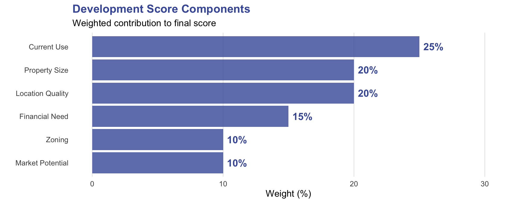

VEREP Property Development Analysis
Strategic Assessment of Development Opportunities
Executive Summary
This analysis examines properties with fewer than 30 Sunday attendees, focusing on development potential through five key metrics: land value, zoning/density, acreage, environmental limitations, and Qualified Census Tract (QCT) status.
This analysis evaluated 126 properties across the diocese to identify optimal development opportunities. We identified 10 high-priority properties representing 69.1 total acres with significant development potential.
Top Insights:
- 44 properties score in Tier 1-2 (strong development potential)
- Primary opportunities: Underutilized parking lots and open space
- Average parcel size: 2.8 acres
- Congregations with declining pledges: 7 properties show high financial need
126
Properties Analyzed
10
High Priority Sites
69.1
Developable Acres
7
Financial Need
At a Glance: Top 10 Properties
| Rank | Property Address | City | Acres | Score | Tier |
|---|---|---|---|---|---|
| 1 | 10520 MAIN ST, FAIRFAX 22030 | FAIRFAX | 4.1 | 85 | High Potential |
| 2 | 1 TRURO LN, FAIRFAX 22030 | FAIRFAX | 3.4 | 85 | High Potential |
| 3 | AQUIA HARBOUR 22554 | AQUIA HARBOUR | 31.4 | 85 | High Potential |
| 4 | 3241 BRUSH DR, FALLS CHURCH 22042 | FALLS CHURCH | 5.6 | 85 | High Potential |
| 5 | WEST FALLS CHURCH 22042 | WEST FALLS CHURCH | 2.6 | 85 | High Potential |
| 6 | 3421 FRANCONIA RD, ALEXANDRIA 22310 | ALEXANDRIA | 4.4 | 85 | High Potential |
| 7 | 37018 GLENDALE ST, PURCELLVILLE 20132 | PURCELLVILLE | 2.0 | 85 | High Potential |
| 8 | 2918 RICHMOND HWY, STAFFORD 22554 | STAFFORD | 8.1 | 85 | High Potential |
| 9 | 3439 PAYNE ST, FALLS CHURCH 22041 | FALLS CHURCH | 2.2 | 85 | High Potential |
| 10 | 10627 PATTERSON AVE, HENRICO 23238 | HENRICO | 5.1 | 85 | High Potential |
Key Findings
Significant Underutilized Assets
44 properties score in Tier 1-2 (strong development potential), representing substantial untapped value across the diocese. Primary opportunities exist in:
- Parking lots (highest development scores): Structured parking with mixed-use above
- Open space parcels: Well-located vacant land ideal for ground lease arrangements
- Properties with declining congregations: Sites where development can provide financial stability
Geographic Distribution
Development opportunities are distributed across Virginia, with concentrations in:
- Urban/suburban areas with strong walkability scores
- Markets with favorable demographics and LIHTC eligibility
- Transit-accessible locations supporting reduced parking requirements
Financial Sustainability Imperative
7 of the top 10 properties are associated with congregations showing significant financial decline (pledge revenue down 20%+ over past decade). Strategic development can provide:
- Long-term ground lease revenue
- Capital for building improvements
- Sustainable financial model for congregation vitality
Methodology & Data
Background & Data Sources
VEREP Parcel Dataset
This analysis utilizes the Virginia Episcopal Real Estate Portfolio (VEREP) parcel dataset, compiled by CGS Consultants. The dataset includes:
126 parcels across Virginia
Comprehensive property characteristics (size, use, zoning)
Environmental constraints (floodplains, wetlands, easements)
Location metrics (walkability, transit access)
Market indicators (median income, demographics)
Congregation Statistics (2014-2023)
Financial and membership data provides context on congregation health:
- Sunday attendance trends
- Membership changes
- Plate & pledge revenue
- 10-year trend analysis
Not all properties have associated congregation data. Properties without congregation information received neutral scores in the financial need category.
Analytical Framework
Development Potential Scoring
Our methodology evaluates six key dimensions:

Constraint Penalties: Properties receive deductions for flood zones (-40), significant wetlands (-35), easements (-30), and historic district designation (-25).
Development Tiers
Properties are classified into five tiers based on composite scores:
- Tier 1 (75-100): High Priority - Immediate development candidates
- Tier 2 (60-74): Strong Potential - Near-term opportunities
- Tier 3 (45-59): Moderate Potential - Requires creative solutions
- Tier 4 (30-44): Limited Potential - Significant barriers exist
- Tier 5 (<30): Not Recommended - Unsuitable for development
Understanding the Development Criteria
Why These Factors Matter
Our scoring methodology reflects decades of real estate development experience and incorporates both market realities and mission-aligned priorities. Each criterion was selected to balance financial viability with community impact, ensuring that recommended properties can support sustainable development while serving congregational needs.
Property Size: The Goldilocks Principle
Optimal Range: 0.5-5 acres
Property size significantly influences development feasibility, but bigger isn’t always better. Properties under a quarter-acre typically lack the critical mass needed for financially viable development—construction costs per unit rise sharply, and parking or open space requirements become impossible to meet. Conversely, parcels exceeding 10 acres often present unique challenges: they may require complex phasing, demand substantial upfront capital, or face community resistance to density.
The “sweet spot” of 0.5-5 acres aligns with typical mixed-use development projects. A half-acre can accommodate a modest 20-30 unit building with ground-floor retail or community space. Two to three acres enables more ambitious projects—perhaps 75-100 residential units, structured parking, and meaningful ground-floor activation. Properties in this range also match the investment thresholds of most community development corporations and mission-driven developers who are natural partners for faith-based institutions.
Current Use: Identifying Low-Hanging Fruit
Highest Potential: Parking Lots and Open Space
Not all church property serves its highest and best use. Surface parking lots represent prime redevelopment opportunities—they’re already cleared and graded, typically have minimal environmental constraints, and often sit underutilized six days per week. A parking lot that serves 200 congregants on Sunday morning but stands empty Monday through Saturday represents an enormous opportunity cost.
Open space scores similarly high, particularly when it’s amenity-free lawn rather than programmed recreation or memorial gardens. These properties can be reimagined while potentially retaining some green space within new development.
Conversely, active church buildings score lower not because development is impossible, but because it’s complex. Any project must navigate active programming, potential relocation needs, and the emotional attachment congregations feel toward sacred spaces. Cemeteries score lowest—they’re essentially undevelopable under most state laws and carry profound cultural sensitivities.
Location Quality: Following the Market
Key Metrics: Walkability Score and Transit Access
Real estate development fundamentally responds to location. A walkable, transit-rich site commands higher rents, attracts more diverse tenants, and often qualifies for density bonuses or reduced parking requirements—all factors that improve project economics.
Walkability scores measure proximity to everyday needs: grocery stores, schools, employment centers, healthcare. High walkability (15-20 on our scale) indicates a property can support car-light or car-free households, expanding the potential tenant base to include young professionals, seniors aging in place, and lower-income families for whom car ownership is cost-prohibitive.
Transit access amplifies these benefits. Properties within a quarter-mile of frequent bus service or half-mile of rail stations can often negotiate reduced parking requirements with municipalities—a significant cost savings when structured parking runs $25,000-$40,000 per space to construct.
Financial Need: Aligning Development with Mission
Priority: Congregations with Declining Resources
This criterion explicitly centers mission over pure market return. Congregations experiencing sustained pledge declines often face a difficult reality: their historic buildings demand expensive maintenance, but shrinking budgets make upkeep increasingly burdensome. Many such congregations sit on valuable real estate that could, through thoughtful development, generate steady income streams while maintaining their worship and ministry.
A ground lease arrangement, for example, might provide a struggling congregation with $50,000-$150,000 annually in stable income—enough to fund a part-time rector, maintain the building, and sustain core ministries. This approach transforms real estate from a drain on resources into a mission enabler.
Properties associated with growing congregations score lower not because they lack development potential, but because the urgency is less acute. These communities likely have more options and less immediate financial pressure.
Market Potential: Reading Economic Signals
Indicator: Area Median Income and LIHTC Eligibility
Development must respond to market demand. Properties in higher-income areas (median incomes above $75,000) typically support market-rate housing, ground-floor retail, or mixed-use projects that can cross-subsidize affordable components. These projects attract conventional financing and a broader range of development partners.
Properties in Qualified Census Tracts (QCTs) gain additional scoring weight because they unlock Low-Income Housing Tax Credit (LIHTC) financing—the nation’s primary mechanism for affordable housing production. LIHTC projects in QCTs receive point advantages in competitive funding rounds, improving their feasibility. For mission-driven institutions committed to affordable housing, QCT properties offer a rare alignment of social impact and financial viability.
Environmental and Regulatory Constraints: Deal-Breakers vs. Speed-Bumps
Critical: Flood Zones, Wetlands, Easements, Historic Districts
These constraints receive substantial score penalties because they materially affect project feasibility and cost. Properties in 100-year floodplains face expensive flood insurance, elevated construction costs, and increasingly cautious lenders post-climate-change. Development in such areas may be technically possible but financially marginal.
Significant wetlands (>25% of parcel) trigger federal and state permitting, potential mitigation requirements, and uncertainty about buildable area. Easements—particularly those held by third parties—can restrict development rights, limit building envelopes, or prevent property subdivision.
Historic district designation doesn’t prohibit development but adds layers of design review, material requirements, and timeline uncertainty. Some historic commissions embrace creative contemporary additions; others mandate strict historicism that may conflict with modern construction economics.
Bringing It All Together
These six criteria, combined with constraint penalties, create a holistic picture of development potential. A property might score exceptionally well on size and location but face significant challenges from environmental constraints. Another might have modest physical attributes but represent an urgent opportunity to support a financially stressed congregation.
The weighted scoring system allows us to compare apples to oranges—to evaluate whether a small, perfectly-located property in a historic district outweighs a larger, unrestricted site with less market demand. This methodology doesn’t make decisions for stakeholders but rather creates a common language for discussing trade-offs and priorities.
Ultimately, successful church real estate development requires more than high scores. It demands patient capital, mission-aligned partners, engaged congregations, and creative design. But by systematically evaluating these criteria, we can identify the properties where stars align—where market demand, congregational need, and regulatory environment converge to create genuine opportunity.
Analysis Results
Development Opportunity Landscape

Geographic Distribution
Data Quality Issues
One of the issues identified by CGS’s initial study was that a large number of congregations either had incomplete or inconsistent data; many congregations share properties or fail to appropriately report their permanent address. Their final output data, which was utilized for this development analysis, reflected this. While environmental constraints accounted for the majority of the missing data, many others contained incomplete property information. For a closer look, we separated and classified these attributes below. These properties can be more precisely assessed for development once they have greater data.
| Metric | Value |
|---|---|
| Total properties analyzed | 126 |
| Properties with incomplete data | 121 (96%) |
| Properties with missing/unassigned addresses | 19 |

Missing and Unassigned Addresses
The following congregations comprise the 19 without proper street addresses, making them difficult to verify or inspect for development.
| Congregation | # Unassigned Properties | Cities | Has Coordinates |
|---|---|---|---|
| St Johns Episcopal Church | 6 | WEST POINT, UNASSIGNED | 6 |
| St Pauls Church | 6 | WEST POINT | 6 |
| St Stephens Church | 2 | UNASSIGNED | 2 |
| Church of the Spirit | 1 | NA | 0 |
| La Iglesia de San Jose | 1 | NA | 0 |
| Olivet Church | 1 | NA | 0 |
| St Andrews Church | 1 | NA | 0 |
| St Francis Korean Church | 1 | NA | 0 |
X of these congregations had coordinates, which allowed for reverse geocoding to identify the likely address or zip code.
# A tibble: 3 × 4
congregation_name sample_lat sample_lon address
<chr> <dbl> <dbl> <chr>
1 St Johns Episcopal Church 37.5 -76.8 916 Main Street, West Point, …
2 St Pauls Church 37.5 -76.8 532 15th St, West Point, VA, …
3 St Stephens Church 38.7 -77.7 20119, Catlett, VA, USA | Congregation | # Properties | Cities | Geocoded Address |
|---|---|---|---|
| St Johns Episcopal Church | 6 | WEST POINT, UNASSIGNED | 916 Main Street, West Point, VA, 23181, USA |
| St Pauls Church | 6 | WEST POINT | 532 15th St, West Point, VA, 23181, USA |
| St Stephens Church | 2 | UNASSIGNED | 20119, Catlett, VA, USA |
Congregations without coordinates will require additional review by the dioses to determine likely location.
5 properties have neither valid addresses nor coordinates. These require manual lookup using county tax records.
Priority Issues Summary
Problem Distribution:
| Issue Type | # Congregations |
|---|---|
| All addresses unique and assigned | 20 |
| Has unassigned addresses | 6 |
| Has shared addresses | 3 |
| Both shared AND unassigned | 2 |
Summary Statistics
Property Portfolio Overview
Property Use Types

Geographic Distribution
Parcels by Diocesan Region
| # Parcels | Total Acres | % of Total Acreage | Avg Dev Score |
|---|---|---|---|
| 126 | 339 | 100 | 52.9 |
Congregation Vitality Metrics
Key Congregation Metrics:
- Parcels with congregation data: 126
- Parcels with <30 Sunday attendance: 126 (100% of properties analyzed)
- Average Sunday attendance: 16 people
- Average annual pledge: $49,047
- Congregations with declining pledges: 70
Developable Land Summary
Comprehensive Developability Analysis
All Developable Properties (Score ≥45)
44
Developable Parcels
192.1
Developable Acres
$18.7M
Assessed Value
1
With <30 Attendance
Breakdown by Development Tier
| Tier | # Parcels | Total Acres | Assessed Value |
|---|---|---|---|
| High Potential | 30 | 146.1 | 18,124,500 |
| Moderate Potential | 14 | 46.0 | 553,409 |
Property Profiles
Overview
The following section provides detailed profiles for each of the top 10 development opportunities. Each profile includes:
- Site characteristics and current use
- Congregation context (where applicable)
- Development opportunities and strategies
- Key considerations and next steps
Property #1
10520 MAIN ST, FAIRFAX 22030
FAIRFAX, FAIRFAX-CITY County
High Potential
4.11 acres
Property Size
16.3/100
Walkability
25 people
Avg Attendance
Site Characteristics
- Current Uses: Church building
Congregation: Holy Cross Korean Episcopal Church
Financial Trend: Plate & pledge has ↑ increased by 42% over the past decade.
Development Opportunities
📐 Substantial site: Large parcel enables phased development or creative master planning
🚶 Walkable location: Transit access supports reduced parking requirements and higher density
Recommended Next Steps
- Site feasibility study and geotechnical analysis
- Congregation leadership engagement
- Zoning review and density bonus evaluation
- Ground lease financial modeling
Property #2
1 TRURO LN, FAIRFAX 22030
FAIRFAX, FAIRFAX-CITY County
High Potential
3.44 acres
Property Size
16.3/100
Walkability
25 people
Avg Attendance
Site Characteristics
- Current Uses: Open space
Congregation: Holy Cross Korean Episcopal Church
Financial Trend: Plate & pledge has ↑ increased by 42% over the past decade.
Development Opportunities
📐 Substantial site: Large parcel enables phased development or creative master planning
🚶 Walkable location: Transit access supports reduced parking requirements and higher density
Recommended Next Steps
- Site feasibility study and geotechnical analysis
- Congregation leadership engagement
- Zoning review and density bonus evaluation
- Ground lease financial modeling
Property #3
AQUIA HARBOUR 22554
AQUIA HARBOUR, STAFFORD County
High Potential
31.38 acres
Property Size
6.8/100
Walkability
0 people
Avg Attendance
Site Characteristics
- Current Uses: Open space
Congregation: Aquia Church
Financial Trend: Plate & pledge has ↓ decreased by 100% over the past decade.
Development Opportunities
📐 Substantial site: Large parcel enables phased development or creative master planning
Recommended Next Steps
- Site feasibility study and geotechnical analysis
- Congregation leadership engagement
- Zoning review and density bonus evaluation
- Ground lease financial modeling
Property #4
3241 BRUSH DR, FALLS CHURCH 22042
FALLS CHURCH, FAIRFAX County
High Potential
5.64 acres
Property Size
13/100
Walkability
21 people
Avg Attendance
Site Characteristics
- Current Uses: Church building
Congregation: St Patricks Anglo Vietnamese Church
Financial Trend: Plate & pledge has ↓ decreased by 55.2% over the past decade.
Development Opportunities
📐 Substantial site: Large parcel enables phased development or creative master planning
🚶 Walkable location: Transit access supports reduced parking requirements and higher density
Recommended Next Steps
- Site feasibility study and geotechnical analysis
- Congregation leadership engagement
- Zoning review and density bonus evaluation
- Ground lease financial modeling
Property #5
WEST FALLS CHURCH 22042
WEST FALLS CHURCH, FAIRFAX County
High Potential
2.62 acres
Property Size
13/100
Walkability
21 people
Avg Attendance
Site Characteristics
- Current Uses: Church building, Open space
Congregation: St Patricks Anglo Vietnamese Church
Financial Trend: Plate & pledge has ↓ decreased by 55.2% over the past decade.
Development Opportunities
📐 Substantial site: Large parcel enables phased development or creative master planning
🚶 Walkable location: Transit access supports reduced parking requirements and higher density
Recommended Next Steps
- Site feasibility study and geotechnical analysis
- Congregation leadership engagement
- Zoning review and density bonus evaluation
- Ground lease financial modeling
Property #6
3421 FRANCONIA RD, ALEXANDRIA 22310
ALEXANDRIA, FAIRFAX County
High Potential
4.39 acres
Property Size
11/100
Walkability
28 people
Avg Attendance
Site Characteristics
- Current Uses: Church building
Congregation: All Saints Sharon Chapel
Development Opportunities
📐 Substantial site: Large parcel enables phased development or creative master planning
🚶 Walkable location: Transit access supports reduced parking requirements and higher density
Recommended Next Steps
- Site feasibility study and geotechnical analysis
- Congregation leadership engagement
- Zoning review and density bonus evaluation
Property #7
37018 GLENDALE ST, PURCELLVILLE 20132
PURCELLVILLE, LOUDOUN County
High Potential
2.02 acres
Property Size
8.5/100
Walkability
0 people
Avg Attendance
Site Characteristics
- Current Uses: Church building
Congregation: St Peters Church
Financial Trend: Plate & pledge has ↓ decreased by 100% over the past decade.
Development Opportunities
📐 Substantial site: Large parcel enables phased development or creative master planning
Recommended Next Steps
- Site feasibility study and geotechnical analysis
- Congregation leadership engagement
- Zoning review and density bonus evaluation
- Ground lease financial modeling
Property #8
2918 RICHMOND HWY, STAFFORD 22554
STAFFORD, STAFFORD County
High Potential
8.15 acres
Property Size
6.8/100
Walkability
0 people
Avg Attendance
Site Characteristics
- Current Uses: Church building
Congregation: Aquia Church
Financial Trend: Plate & pledge has ↓ decreased by 100% over the past decade.
Development Opportunities
📐 Substantial site: Large parcel enables phased development or creative master planning
Recommended Next Steps
- Site feasibility study and geotechnical analysis
- Congregation leadership engagement
- Zoning review and density bonus evaluation
- Ground lease financial modeling
Property #9
3439 PAYNE ST, FALLS CHURCH 22041
FALLS CHURCH, FAIRFAX County
High Potential
2.24 acres
Property Size
18.3/100
Walkability
0 people
Avg Attendance
Site Characteristics
- Current Uses: Church building
Congregation: St Pauls Church
Development Opportunities
📐 Substantial site: Large parcel enables phased development or creative master planning
🚶 Walkable location: Transit access supports reduced parking requirements and higher density
Recommended Next Steps
- Site feasibility study and geotechnical analysis
- Congregation leadership engagement
- Zoning review and density bonus evaluation
Property #10
10627 PATTERSON AVE, HENRICO 23238
HENRICO, HENRICO County
High Potential
5.08 acres
Property Size
8.3/100
Walkability
0 people
Avg Attendance
Site Characteristics
- Current Uses: Church building
Congregation: St Bartholomews Episcopal Church
Development Opportunities
📐 Substantial site: Large parcel enables phased development or creative master planning
Recommended Next Steps
- Site feasibility study and geotechnical analysis
- Congregation leadership engagement
- Zoning review and density bonus evaluation
Appendices
Scoring Algorithm Details
Each property receives scores across six dimensions (0-100 scale), which are then weighted and combined:
- Size Score (20% weight): Properties between 0.5-5 acres score highest (100 points)
- Use Score (25% weight): Parking lots (95) and open space (90) score highest
- Location Score (20% weight): Based on walkability index and transit access
- Financial Score (15% weight): Congregation pledge trends indicate development need
- Market Score (10% weight): Area median income and LIHTC eligibility
- Zoning Score (10% weight): Development-friendly zoning receives 80 points
Constraint penalties are applied after the weighted average, with major penalties for: - Flood zones: -40 points - Significant wetlands (>25%): -35 points
- Easements: -30 points - Historic districts: -25 points
Final scores are capped between 0-100.
Congregation-Parcel Joining: Properties were matched to congregation data using the congr_name field. Properties without matches received neutral financial scores.
Missing Data Handling: - Missing walkability scores defaulted to 0 - Missing income data received median market scores (50) - Properties without area or coordinates were excluded
Quality Filters: - Minimum parcel size: 0.1 acres - Required valid lat/lon coordinates - Valid building years: 1700-2025